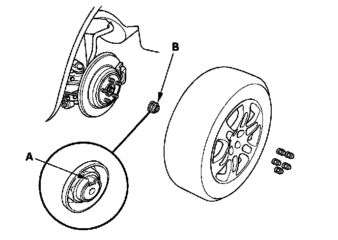
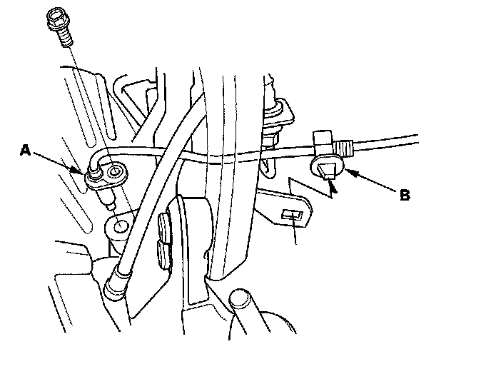
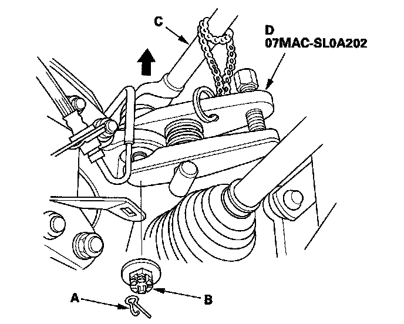
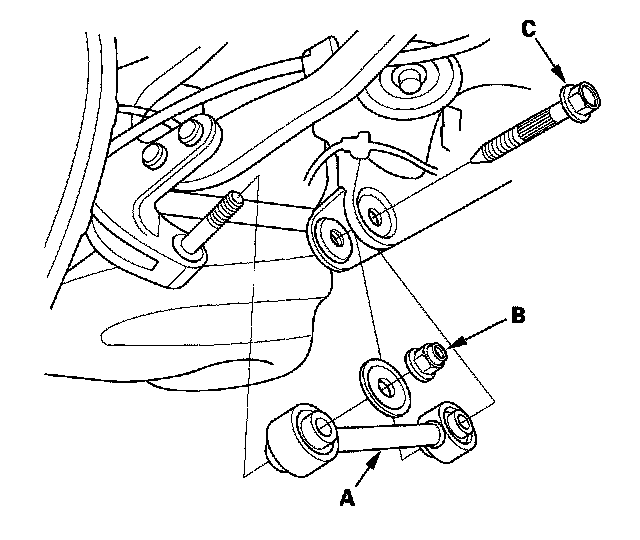
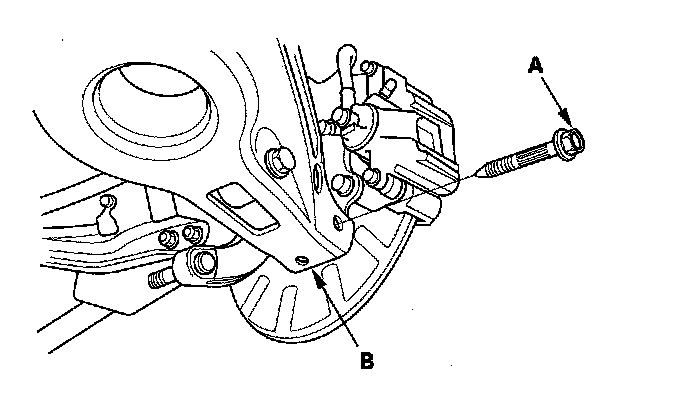
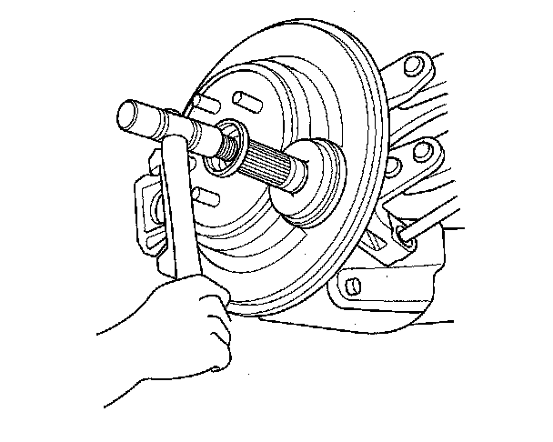
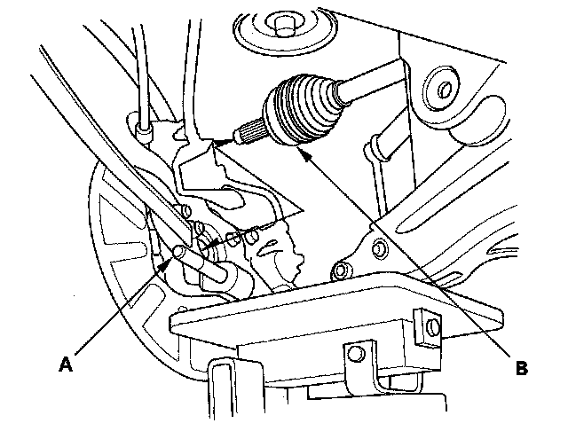
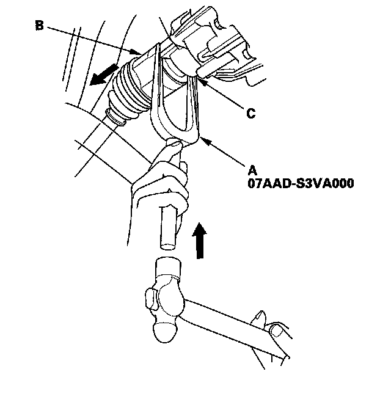
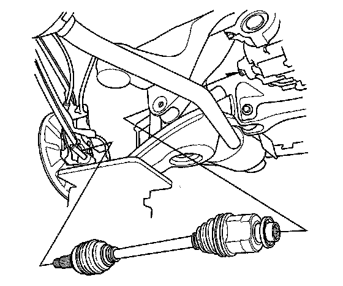

Rear Driveshaft Removal
Rear Driveshaft RemovalSpecial Tools Required
^ Driveshaft remover 07AAD-S3VA000
^ Ball joint remover, 28 mm 07MAC-SL0A202
1. Raise the vehicle on a lift, and remove the rear wheels.
2. Lift up the locking tab (A) on the spindle nut (B) then remove and discard the nut.

3. Remove the VSA rear wheel sensor (A) and harness clip (B).

4. Remove the lock pin (A) from the upper arm ball joint castle nut (B) and remove the nut.

5. Separate the ball joint from the upper arm (C) with the ball joint remover (D).
6. Remove the special self-locking nut (B) washer and flange bolt (C) then remove the lower arm A.

7. Place a transmission jack under lower arm B and remove the flange bolt (A).

8. While pulling the knuckle outward, use a plastic hammer to lightly tap on the rear driveshaft outboard joint disconnecting it from the rear wheel hub.

9. Pull the knuckle (A) outward, then remove the rear driveshaft outboard joint (B).
NOTE: When removing the outboard joint, continue supporting both the knuckle and lower arm with the transmission jack. Make sure not to over extend the brake hose.

10. Using the driveshaft remover (A) and the hammer, pry out the inboard joint (B) from the rear differential (C).

11. Remove the rear driveshaft.
